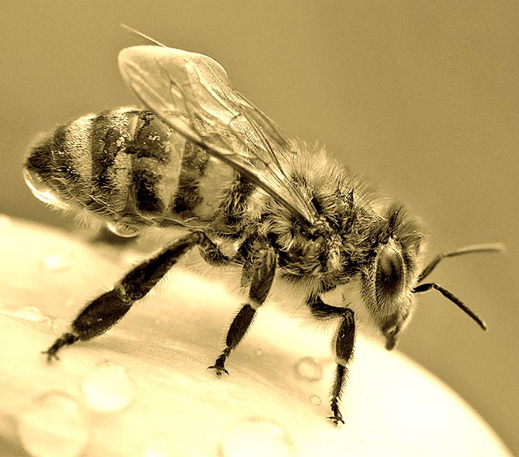
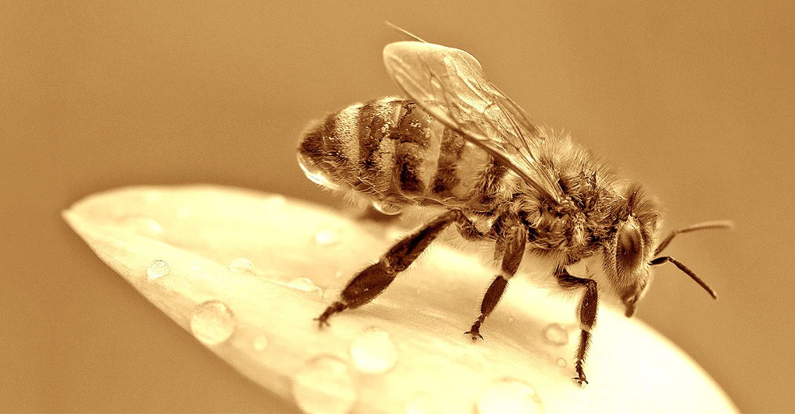

Bienen


40 Millionen Jahre - seitdem existiert die Honigbiene
40 Jahre Glyphosat und andere „solche Stoffe“ - die Honigbiene stirbt.
Die „intensive“ Fehlentwicklung in der Landwirtschaft hat ein Massensterben verursacht. Sie hat hat in den letzten 40 Jahren zu einem drastischer Rückgang der Artenvielfalt geführt, Dezimierung in allen Lebens-Bereichen. Das Ende ist in Sicht- und Höhrweite. Wenige Menschen haben dieses vielen anderen Menschen angetan, ohne deren Einwilligung. Millionen Stimmen, die sich eine gesunde Landwirtschaft wünschen, wurden nicht gehört. Sie wurden einfach missachtet! Miflbrauch von Mutter ERDE, Abtötung von Lebewesen, Vergiftung unseres Lebensraumes durch Produkte der Pharmaindustrie. Honig wird wegen überhöhter Glyphosat-Werte als nicht mehr „verkehrsfähig“ eingestuft. Der Imker wird nicht entschädigt. Die Verursacher der Verunreinigung werden nicht in die Verantwortung genommen. Dafür wird unsere Gesundheit „in Kauf“ genommen. Wir sind der „Pfand“ für die Gier nach Geld und Macht - Geld ist wichtiger als das Leben. Unzählige Stoffe haben jahrzehntelang unsere „fruchtbaren und nährstoffreichen“ Böden sowie unser „wertvolles“ Grundwasser kontaminiert. Durch die Verunreinigung muss das Wasser aufwendig gefiltert werden, die Kosten tragen die Verbraucher... Wir brauchen Transparenz !!! Regelmässige Boden- und Wasserproben geben Gewissheit. Sie sind unsere Lebensgrundlage. „Unser täglich Brot gib uns heute...“ wo wächst unser Getreide für die Nahrung? Ökologische und nachhaltige Landwirtschaft ist eine Selbstverständlichkeit. Wir haben die Erde von unseren Kindern geliehen... Die WORLD HEALTH ORGANISATION ist neutral und ihr Bestreben ist es, die Gesundheit zu schützen !!! Sie äußert diese Bedenken, es ist ratsam kritisch zu sein! Diese Organisation ist dem Lobbyismus nicht verpflichtet. Hingegen bringt der Präsident des Bauernverbandes Herr Detlef Kurreck die Verwendung von Glyphosat mit „Vernunft“ in Verbindung und bewertet das Mittel als „harmlos“ bei richtiger Anwendung. Wer kontrolliert die „richtige“ Anwendung über die Aufwandmenge und Ausbringung? Die Erosion stellt angeblich eine „Gefahr“ dar. (Erosion: Erdabtragung durch Wasser, Eis und Wind). Hecken und Knicks schaffen Abhilfe und neue Lebensräume. Gründüngung bringt Nährstoffe. Das weiss der Landwirt doch, der die Erde so „liebt“. „Dem Felde muss an Bodenbestandteilen wieder erstattet werden, was er (der Landwirt) demselben in der Ernte genommen hat.“ von Liebig / Argoneum Alt-Schwerin. Flächen bis zum Horizont werden vergewaltigt wegen der Idiotie der Monokultur. Biodiesel als Kraftstoff wurde eigens dafür angepflanzt. Dieser wird nun angeprangert im Gegensatz zu dem ja so harmlosen, unverzichtbaren Glyphosat! Wer`s glaubt wird seelig... Sag mir wo die Blumen sind, wo sind Sie geblieben? Sag mir wo die Insekten, Vögel und Schmetterlinge sind, wo sind Sie geblieben? Sag mir wo sie alle sind, was ist geschehen? Sag mir wo die Vielfalt ist, wo ist sie geblieben? Über Felder weht der Gift-Wind ... wann wird man je verstehen, wann wird man je verstehen??? Wollen Sie das weiterhin tatenlos hinnehmen?
Imkerei Gisela Paasch
Letzin 79 - 17089 Gnevkow
0176 961 38 235